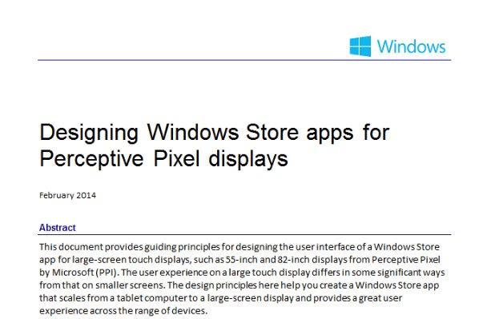
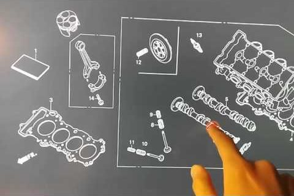

UX Guidelines
Large scale Perceptive Pixel displays come with their own set of UX challenges and restrictions that aren't evidently when developing applications on laptop and desktop sized touch devices. On the Large Screen Experience team at Microsoft, the recognition of these issues led me to create a set of UX guidelines for apps that target large scale displays.
Topics covered in the document include the different scenarios for using large scale displays, human factors, controls placement, the use of colour and animation.

Infinite Canvas Navigation
Digital whiteboards often espouse the benefit of an infinite canvas. However, with unconfined pan and touch capabilities, and a lack of solid points of reference, users can easily become lost within the space. This problem is compounded when the experience is run on a large scale display.
This UX prototype explored ways to provide subtle navigation bounds and visual feedback to address this issue.
Issues and Requirements
- Targeting large scale Perceptive Pixel (stylus and multi-touch enabled) displays
- Enable the benefit of an infinite canvas while subtly restricting the experience so the user doesn't get lost
- Mini-maps and similar positional references don't work as well on large scale displays - mini-maps placed on the corners of the canvas space will fall beyond the user's FOV on a large scale display. The same issue applies for zoom controls.
- Physical movement across a large scale display can be tiring. Leverage the ability for users to pull content towards themselves instead of having to walk, stretch or bend down to reach the content
- Without consistent zoom indicators, a user can unintentionally write text at varying
Approach
- Use bounded panning to keep at least a small portion of the user's content visible on the screen
- On screen zoom indicators, and snapped zoom levels, to give feedback of zoom state
- The ability to pull the canvas in all directions to bring the content to a comfortable writing level for the user
Touch Hover Exploration
Touch points on touchscreens can be viewed as an inherently single bit operation - the touch is either on the screen or not. At the same time, gestural controls can feel too freeform due to its lack of haptic feedback.
This UX prototype explored the use of a Leap Motion controller to bridge the gap between gestural and touch controls, enabling a hover state for touch.
Issues and Requirements
- Touch screens do not provide hover feedback for touch points
- Gestural controls are too freeform
Approach
- Used Leap Motion SDK to provide hover feedback for touch points
- Hover for more information - This is a common, accepted gesture when using mouse controls, but there is no analog for this when using touch
- Palm detection for stylus scenarios - By leveraging the Leap Motion's capability to see tools, palm rejection can be performed in a more intelligent way, leading to a more natural stylus experience (avoiding hacks like disabling all touch when a stylus is in hover range

Adaptive UX
Content creation on large scale displays can often be encumbered by the poor placement of controls. Having to bend, stretch or walk over to reach traditional tool bar and palette placements can be physically tiring after a few minutes of usage. Furthermore, really large scale displays (80+) can accommodate multiple simultaneous users, which can break down traditional controls intended for a single user.
This UX prototype explored leveraging a Kinect 2.0 to address these issues, providing user tracking for intelligent contextual controls placement.
Issues and Requirements
- Targeting large scale Perceptive Pixel (stylus and multi-touch enabled) displays
- Traditional control placements in toolbars and palettes can be difficult or tiring to repeatedly reach and use
- A singular set of content creation controls breaks down for multiple simultaneous user scenarios
Approach
- Prototype basis was a whiteboard content creation app
- Use Kinect 2.0 skeletal SDK to track the physical location of users
- Intelligently place contextual controls within the reach of users based on their skeletal location, while taking care to avoid placement in the area they're actively writing/drawing on
- Explored further contextual tools that replicate physical tools - touch and stylus enabled rulers for straight edges
- Proposed use of Kinect skeletal ID to present multiple simultaneous contextual controls, bind skeletal ID to inputs